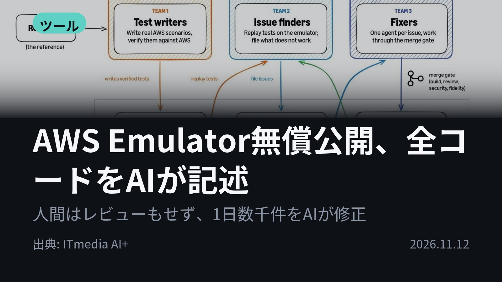
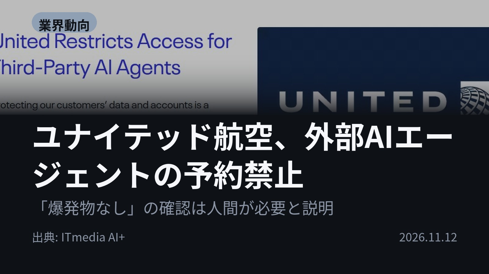
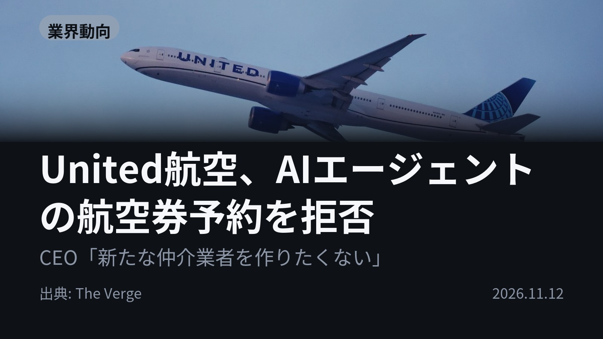
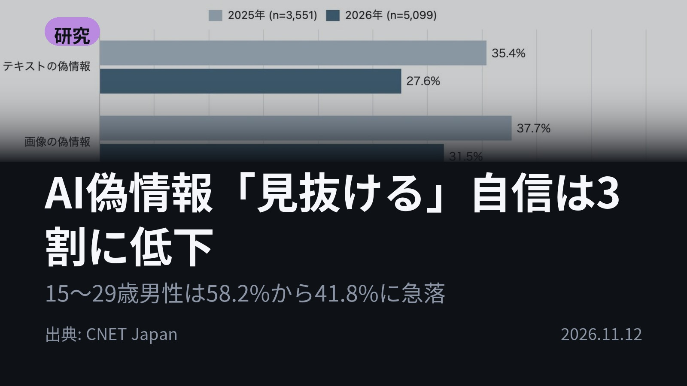
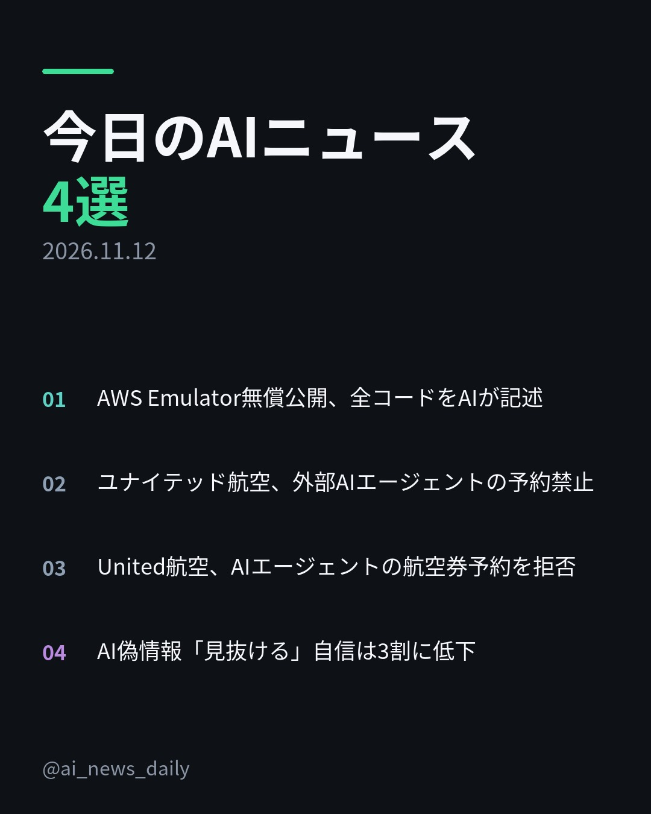
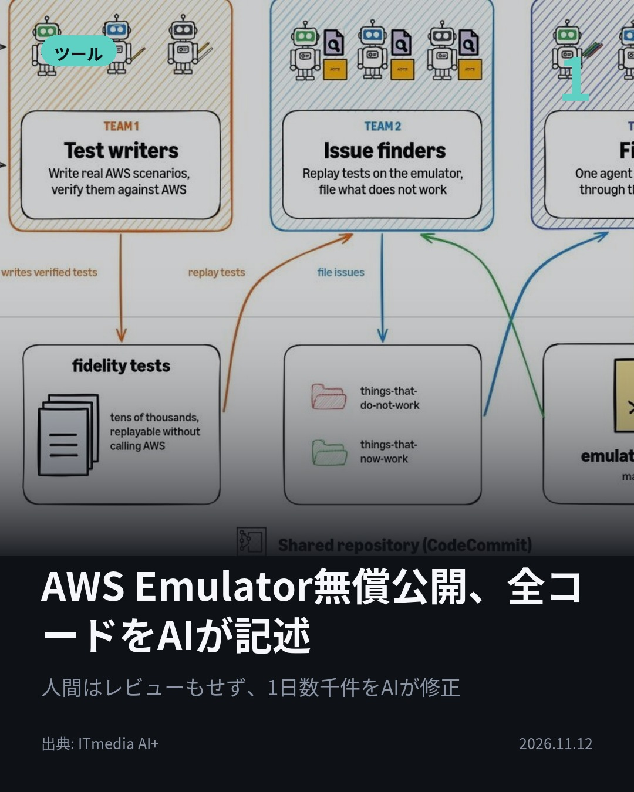
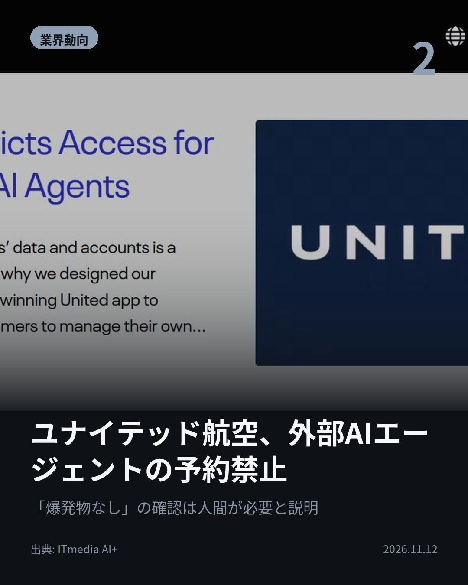
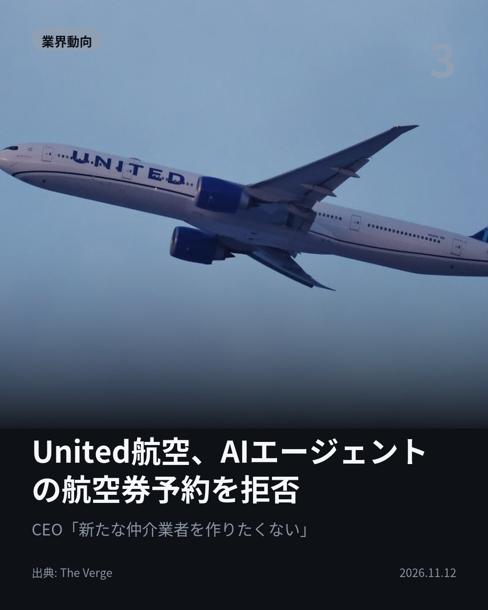
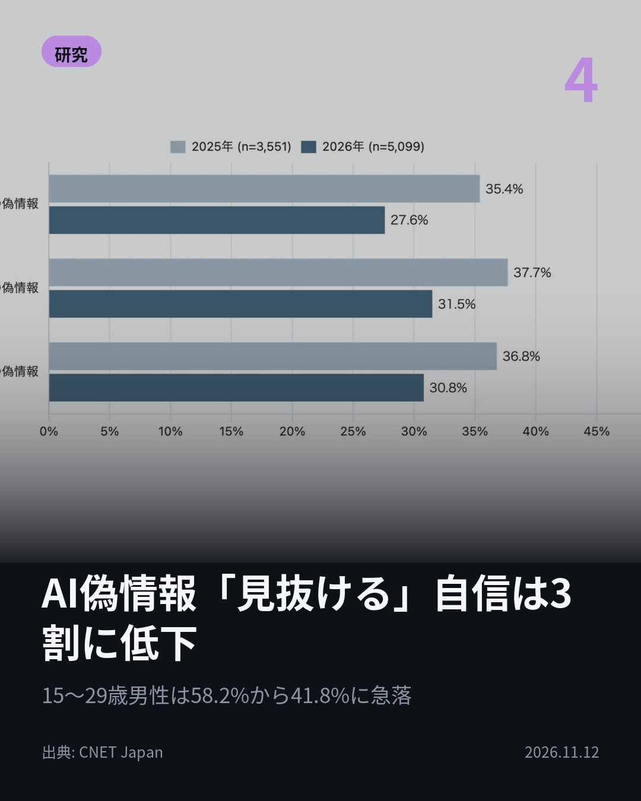

今日のAIニュース 下書き
2026-11-12 生成 11/13 22:52
⚠ ファクト照合で要確認の項目があります。
各ニュースの警告を確認してから投稿してください。
X（4投稿）
AWS Emulator無償公開、全コードをAIが記述
原題: Amazon、AWSのAPIを手元で再現する「AWS Emulator」を無償公開 コードはすべてAIエージェントが記述

始まりは、週末の実験だった。 AWSのAPIを手元で再現する「AWS Emulator」が無償公開。コードはすべてAIエージェントが書き、人間はレビューもしていない。数百のエージェントが1日数千件の問題を修正している。 #AI #AWS（出典: ITmedia AI+）
重み 226 / 280（見た目 133字）

ユナイテッド航空、外部AIエージェントの予約禁止
原題: ユナイテッド航空、外部のAIアシスタントによる航空券の予約などを禁止へ 「チェックインには人間の確認が必要」

AIに航空券の予約を任せられないのはなぜか。 ユナイテッド航空が、許可のない外部AIエージェントの利用を禁止すると発表。認証情報の共有による情報漏えいや、意図しない購入・マイル使用の恐れを理由に挙げた。 #AI #AIエージェント（出典: ITmedia AI+）
重み 238 / 280（見た目 130字）

United航空、AIエージェントの航空券予約を拒否
原題: United won’t let your AI agent book your flight

便を見せるのは可、予約の完了は不可。 ユナイテッド航空はAIエージェントによる航空券購入を認めない方針。Scott Kirby CEOは「正直、新たな仲介者は作りたくない」と発言。将来の再検討にも含みを残した。 #AI #ユナイテッド航空（出典: The Verge）
重み 233 / 280（見た目 132字）
要確認:
［固有名詞］ユナイテッド — この語が本文に見つかりません
［固有名詞］エージェント — この語が本文に見つかりません
［固有名詞］ブロック — この語が本文に見つかりません
［固有名詞］Verge — この語が本文に見つかりません

AI偽情報「見抜ける」自信は3割に低下
原題: AI生成の偽情報、見抜ける？ 「自信あり」は約3割に低下--ドコモ調査

AIの偽文章を「見抜ける自信あり」は35.4％→27.6％に低下。 ドコモ調査。画像は31.5％、動画は30.8％。生成AIを「詳しく知っている」人でも文章で15.7ポイント減。測ったのは自信で、見分ける能力ではない。 #生成AI #偽情報（出典: CNET Japan）
重み 229 / 280（見た目 134字）

Instagram（カルーセル 6枚）


1. 表紙


2. ニュース


3. ニュース


4. ニュース


5. ニュース

6. CTA
人間はコードを1行も書かず、レビューもしない。AWSの新ツールは数百のAIエージェントが作りました。 一方で、AIエージェントを締め出す企業も出ています。 1. ① AWS Emulatorは、AWSのAPIモデル438件を基に作られたローカル用の再現ツール。AWSアカウント不要、追加料金なしでテストに使えます。最初に作った「Amazon SQS」は約15分で完成したとのこと。本番環境やセキュリティのテストでの利用は想定されていません。(ITmedia AI+) 2. ② ユナイテッド航空は、AIによる自動操作が米連邦航空局（FAA）や米運輸省（DOT）の規制に違反する恐れがあると説明。チェックインでは、手荷物に爆発物などが入っていないことを人間が確認する必要があるとしています。米国ではAmazonが9月20日からMetaのAIエージェント「Muse」による買い物をブロックし、10月には大手銀行も制限に動きました。(ITmedia AI+) 3. ③ The Wall Street Journalの報道によると、AIエージェントで航空券を予約しようとする人は、まだ多くないそうです。エージェントはUnitedの便を表示できますが、取引の完了はできません。eBayもエージェントによるサイト閲覧をブロックしたとみられています。(The Verge) 4. ④ 15〜29歳の男性では、文章の偽情報を見抜く自信がある人が58.2％から41.8％に低下。一方、AIを信じすぎて失敗した経験がある人は自信が高い傾向で、画像では47.3％と、経験がない人の34.7％を上回りました。2025年と2026年で回答者は異なります。(CNET Japan) AIエージェントに開発を任せる企業と、外部のAIエージェントの利用を制限する企業。両方のニュースが並んだ日でした。 毎朝4本、AIニュースを要点だけにまとめています。あとで読み返せるよう保存を、明日の4本も受け取りたい方はフォローをどうぞ。 #AI #生成AI #人工知能 #テクノロジー #AIニュース #ITニュース #AIエージェント #AI活用 #AWS #AWSEmulator #Amazon #Kiro #ユナイテッド航空 #UnitedAirlines #Muse #偽情報 #フェイクニュース #ドコモ #モバイル社会研究所 #ソフトウェア開発 #エンジニア #ArtificialIntelligence #GenerativeAI #AIAgent #TechNews
1079字（Instagram上限 2,200字）
この日の選定理由
AWS Emulator無償公開、全コードをAIが記述
数百のAIエージェントがテスト作成・不具合報告・修正を分担し、人間がコードを書かずレビューもしない開発体制が大手で実運用されている。ソフトウェア開発の進め方が変わる具体例になる。
ユナイテッド航空、外部AIエージェントの予約禁止
Amazonや大手銀行に続き航空会社もパーソナルAIエージェントを締め出し、「AIに代わりに手続きさせる」未来に企業側の壁が立ちはだかっている。認証情報をAIに渡すリスクと責任の所在が焦点になる。
United航空、AIエージェントの航空券予約を拒否
企業がAIエージェントを拒む理由に、安全面だけでなく顧客接点を奪われたくない本音が見える。パーソナルAIアシスタントの実用性を左右する動きになる。
AI偽情報「見抜ける」自信は3割に低下
生成AIに詳しい人でも自信が10ポイント以上下がっており、偽情報の精巧化を利用者自身が実感していることがうかがえる。測定したのは自信であって、実際に見分ける能力ではない点に注意が必要。